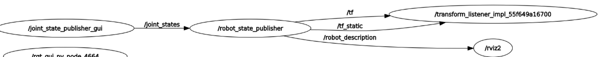
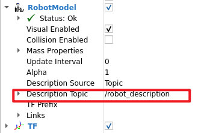

005 机器人建模
机器人建模
URDF
为了在仿真软件里面加载机器人本体，我们通常需要对机器人进行建模。而ROS及一些仿真软件通常使用URDF（Unified Robot Description Format）格式的文件来对机器人建模
URDF是一种基于XML的机器人模型描述格式，主要用于定义机器人的连杆（links）、关节（joints）、几何形状和物理属性
基本结构
URDF文件以<robot>为根标签，包含<link>（描述刚体）和<joint>（描述连接关系）两类核心标签
1 |
|
常用标签
在进行运动学和动力学仿真时，所需要的子标签不完全相同。如果仅进行运动学仿真，则不需要碰撞、摩擦、质量等子标签
robot
作为一个urdf的根标签，全局只有一个
link
描述机器人的一个刚体部件（如底座、轮子、传感器等）
| 子标签 | 作用 | 关键属性/子标签 |
|---|---|---|
<visual> |
定义部件的可视化外观（形状、颜色、材质等） | - <geometry>：形状（<box>、<cylinder>、<sphere>、<mesh>） - <origin>：偏移和旋转（xyz、rpy） - <material>：颜色（rgba） |
<collision> |
定义部件的碰撞几何体（用于物理仿真） | 与<visual>类似，但通常更简化以提高性能 |
<inertial> |
定义部件的质量、质心和惯性矩阵（动力学仿真必需） | - <mass>：质量（value） - <inertia>：惯性矩阵（ixx、ixy等） - <origin>：质心位置 |
joint
描述2个连杆间的连接关系
| 子标签 | 作用 | 关键属性/子标签 |
|---|---|---|
<parent> |
指定父<link>的名称（必需） |
link：父链接名称 |
<child> |
指定子<link>的名称（必需） |
link：子链接名称 |
<origin> |
定义关节坐标系相对于父/子链接的偏移和旋转 | xyz：平移偏移 rpy：旋转角度（弧度） |
<axis> |
定义关节的运动轴（如旋转轴或平移方向） | xyz：轴方向向量（如 "1 0 0" 表示绕X轴旋转） |
<limit> |
设置关节的运动限制（如角度、速度、力矩） | lower/upper：位置限制 effort：最大力矩 velocity：最大速度 |
<dynamics> |
定义关节的物理特性（如阻尼、摩擦） | damping：阻尼系数 friction：静摩擦系数 |
<safety_controller> |
设置安全控制器参数（防止关节超限） | soft_lower_limit/soft_upper_limit：软限制边界 |
<mimic> |
使当前关节模仿另一个关节的运动（如机械臂的联动） | joint：被模仿的关节名 multiplier：运动比例。 |
合法性检查
1 | check_urdf xxxx.urdf |
rviz可视化
在使用URDF文件定义好了机器人后，需要通过一些node间的通信机制把信息发给rviz节点，然后rviz在收到对应的信息后，就可以显示机器人了
URDF定义的机器人模型是静态的，如果要控制其移动，也需要发送某些预定的topic
| 用途 | 预定话题 |
|---|---|
| (rviz)获取机器人 URDF 模型描述 | /robot_description（存储 URDF/Xacro 的 XML 字符串） |
(rviz)实时获取各连杆（<link>）的坐标系变换关系 |
/tf 和 /tf_static（发布父子坐标系间的位姿） |
(rviz)获取关节（<joint>）的实时角度/位置 |
/joint_states（由 joint_state_publisher 或控制器发布） |


可以看到，rviz如果要显示机器人，主要依靠的是/robot_description话题，他是由robot_state_publisher功能包中的同名node发送的，所以我们要启动这个node才行
xacro
All articles on this blog are licensed under CC BY-NC-SA 4.0 unless otherwise stated.